Snow reports · November 2026
Daily snow reports for skiers: where the snow is, what is coming and where to ski, from the SnowScope snow map and measuring stations. Every number comes from that day's data.

La Grave has 171 cm on upper slopes today, which is 68% of normal for late November. The Alps saw sharp gains this weekend.

Slovenia's mountains gained 1880 km² of snow cover in three days. The Julian Alps saw the most fall, with 40 cm, while lower ranges stayed dry.

The 0 °C level rises to 3200 m on Tuesday, bringing rain to mid-mountain slopes. Snow line stays above base at most resorts until Wednesday.

When to book in Finland: Kallin has 11 cm now, best snow usually in early March / mid-March

72-hour snowfall mapped across Ukrainian ranges: Chornohora led with 24 cm, Gorgany 19 cm, Borzhava 14 cm. Data from 2026-11-22.

Our snow model shows the Alps will receive up to 95 cm in the next 14 days, with 63% falling before 30 November. Data from 22 November 2026.
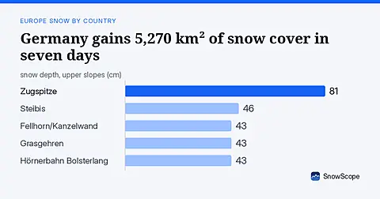
German snow cover jumped from 5,460 to 10,730 km² in a week. The Allgäu Alps lead with 47 cm of fresh snow in 72 hours as of 22 November.

How much snow is coming in the Alps, and where? By 25 November the forecast adds 64 cm at Jungfraujoch Snow Fun Park, 57 cm at Alpe d'Huez Grand …

Austria gained 11,600 km² of snow in seven days. Stubaier Gletscher leads with 67 cm. Data from 22 November 2026.

Snow in Sauerland and the German uplands on 22 November: snow depth on the upper slopes, fresh snow, the next three days and the pick for a short trip.

Swiss Alps covered 71 percent white versus 18 percent in France as of 22 November. Valais holds 166 cm in 72 hours.

Snow in Tyrol and Vorarlberg on 22 November: snow depth on the upper slopes, fresh snow, the next three days and the pick for a short trip.

La Grave has 171 cm of snow, far ahead of the typical 82 cm for late November. France's Alps gained 90 cm in 72 hours as of 22 November.

Port del Comte in the pre-Pyrenees of Lleida: usual snow depth from 46 past winters at the base, mid-mountain and the top, month by month, why the natural cover is thin, and how to time a day trip.

The Mölltal glacier above Flattach: usual snow depth at the base, mid-mountain and the top from 46 past winters, from the first snow in September to the May skiing, and why the depth is a different world from the valley.

Austria's largest ski pass area month by month: usual snow depth at the base, mid-mountain and the top from 46 past winters, where the snow is safe in December and where it is thin, and the weeks that never fail.

What 46 past winters say about the snow in Tignes: usual depth at the base, mid-mountain and the top of the Tignes – Val d'Isère area month by month, the weeks that never fail, and why the village height matters less here than elsewhere.

Hafjell above Lillehammer month by month: usual snow depth at the base, mid-mountain and the top from 46 past winters, the first snow, the deepest weeks and how the recent winters compare.

Kvitfjell, the Olympic downhill mountain north of Lillehammer: usual snow depth at the base, mid-mountain and the top month by month from 46 past winters, the reliable weeks and the spring.

Why Trysil's snow report shows two very different numbers: usual depth at the base, mid-mountain and the top of Trysilfjellet from 46 past winters, month by month, and what it means for the runs you will ski.

Where did the most fresh snow fall in the Alps? Fresh snow at Le Reposoir Chalet Neuf: 128 cm in the last 72 hours, including 88 cm in the last 24. …

Italy has 101 cm at La Thuile ski on 22 November, three times the normal depth for this date. The Aosta Valley led with 242 cm in 72 hours.
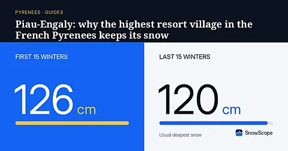
Piau-Engaly month by month from 46 past winters: usual snow depth at the base, mid-mountain and the top, the late first snow, the February peak and how the small, high resort compares with the big Pyrenean names.

Where is the deepest snow in the Pyrenees today? If you want the most snow in the Pyrenees today, look at Gavarnie-Gèdre (France): about 26 cm up …

Jungfraujoch leads Europe with 44 cm in 24 hours; Mount Cain Alpine Park forecast for 132 cm in 72 hours. Forecast from 2026-11-22.

Alpe d'Huez Grand Domaine month by month: usual snow depth at the base, mid-mountain and the Pic Blanc from 46 past winters, the safe weeks, the weak Decembers and the trend.

Albanian mountains face significant snow in the next 7 days, with 16 cm forecast for 23 November. Data from 21 November.

Czechia lost 1,160 km² of snow cover in a week: where it still holds. Snow cover, new snow, resorts and the days ahead in Czechia on 21 November.
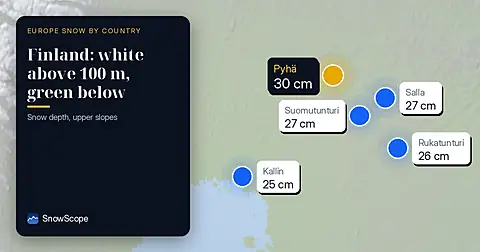
Finland: white above 100 m, green below. Snow cover, new snow, resorts and the days ahead in Finland on 21 November.
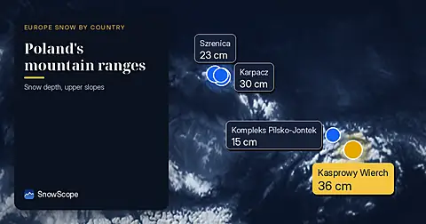
Fresh snow fell unevenly across Polish mountains in 72 hours to 21 November. The Tatras lead with 21 cm; lower ranges collected less.

Romania's snow cover stands at 11% on 21 November, while Ukraine holds 52%. Fresh snow is building across Romanian peaks ahead of a 13 cm event on 23 November.
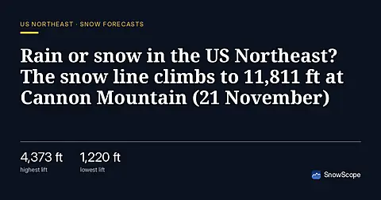
The forecast keeps the 0 °C level in the US Northeast between 0 ft (0 m) and 12,861 ft (3,920 m) for the next days. The snow line, about 984 ft …

Today's snow in the US Northeast, read from our model and forecast, means thin early-season snow, icy mornings and soft afternoons and warm air that …

Our snow model forecasts up to 199 cm across the US West in the next two weeks, with the heaviest snow arriving in week one. Data from 21 November 2026.

Mt Baker will see 22 cm of new snow by November 24, but the freezing level rises above 1,000 m on November 22, bringing rain-on-snow risk to lower slopes.
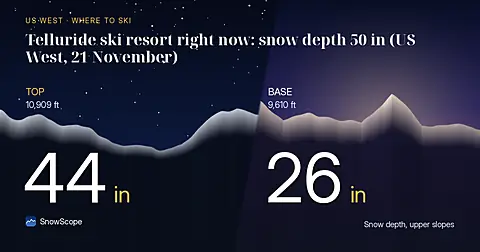
Telluride today: snow depth 50 in (US West, 21 November). US West snow report, 21 November. The most snow in the US West is at Brian Head Resort: …

Snow on the ground, snow from the last 72 hours, snow still to come: together they point to Kirkwood, Bear Valley and Dodge Ridge. Among these …

Our two-week maps show where new snow should fall in Western Canada between 22 November and 5 December, from the two global models that reach two …

Up to 76 cm: that is what our forecast gives Mount Washington Alpine Resort by 24 November. And more is coming: by 24 November, the forecast brings …

150 cm on the upper slopes: that is why Whistler Blackcomb heads our list. Snow on the ground, snow from the last 72 hours, snow still to come: …

Ukraine saw snow cover jump from 6,040 to 9,120 km² in seven days. Драгобрат leads with 17 cm depth; heavy snow forecast through November.

Slovakia has 2,680 km² under snow after 17 cm of fresh snow in 72 hours, far outpacing Czechia. Data from 21 November 2026.

Fresh snow fell unevenly across Germany in the past 72 hours: 39 cm in the Allgäu Alps, 31 cm in the Bavarian Alps, 16 cm in the Black Forest. Data from 2026-11-21.

Germany has 1790 km2 of snow cover on 20 November, Austria leads with 44 percent white cover. The Allgäu Alps received 34 cm in 72 hours.

Montenegro: up to 31 cm of new snow on the way, most of it on Thursday 26 November

Riksgränsen holds 167 cm today. Our snow model shows late March and mid-April are usually the snowiest weeks. Next seven days: up to 26 cm possible.

Snow-covered area fell from 3,570 km² to 330 km² in one week. Only the highest peaks above 2,000 m hold snow as of 21 November.


Sweden's snow cover reaches from sea level across 90 percent of the mapped area on November 20. Heights above 1000 m hold 42 cm average depth.
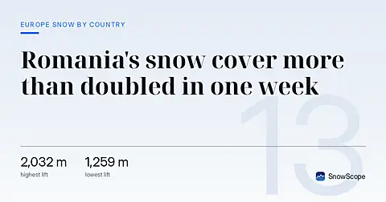
Romania gained 2,090 km² of snow cover in seven days. By 20 November, 4,000 km² lay under snow across the mountains, with new falls expected to push totals higher.

Rain above 2980m today at Gavarnie-Gèdre, but more snow arrives in four days. What to wear and bring for changing Pyrenees conditions.

Björkliden has 138 cm today. Sweden averaged 95 cm across measured resorts. Snow depth peaks in mid-April (weeks 14–15). Data from 21 November 2026.

Slovenia faces major snowfall over the next 7 days, with up to 53 cm expected. The heaviest falls arrive on 26 November. Data from 21 November.

The 0 °C level in the Alps, next days: 1,330 m to 3,210 m. Warmest hours: snow line about 300 m lower, up to 2,900 m at La Grave on Sunday 22 …

Slovenia lost nearly 600 km² of snow cover in seven days. Only 600 km² remain white as of 20 November, but high peaks still have good depth.
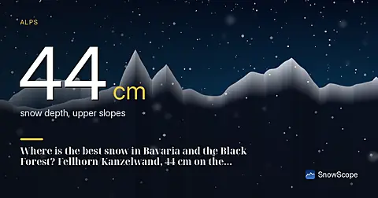
Snow in Bavaria and the Black Forest on 20 November: snow depth on the upper slopes, fresh snow, the next three days and the pick for a short trip.

France is right on schedule: Orelle has 74 cm, a normal 21 November has 64 cm. Snow cover, new snow, resorts and the days ahead in France on 21 November.

Fourteen days of new snow on one map, 22 November to 5 December, for every mountain in the Alps: that is what the two global models that reach two …


Austria has snow across 56 percent of measured terrain on 21 November, far ahead of Germany at 7 percent. Vorarlberg received 47 cm in three days.

Snow in Switzerland on 21 November: snow depth on the upper slopes, fresh snow, the next three days and the pick for a short trip.


Snow on the ground, snow from the last 72 hours, snow still to come: together they point to Orelle, Les Arcs and Le Grand Domaine. The deepest …

Mixed rain and snow expected across the Pyrenees over the next three days, with the freezing level rising above resort summits by Sunday. New snow forecast between 13–24 cm at altitude.

Early-season snow in the Alps is running 38% above the 46-year average. La Plagne's mid-slopes hold 36 cm more than usual for this date, with heavy snow forecast through Sunday.

The National Weather Service expects 10 to 20 inches in the Wasatch from Thursday to Saturday. Where Utah's snowpack stands against past winters, why Utah snow is lighter, and when to ski.

Alpe d'Huez will receive the most snow in the Alps over the next 72 hours. Beartooth Basin Summer leads the US West and Canada in fresh snow through Sunday.

What the measured snow gauges say about the North Lake Tahoe storm, why the first snow is heavy and wet, and how Sugar Bowl, Northstar and Diamond Peak compare with 46 winters.

About 28 inches of new snow at Mammoth and 26 inches at June Mountain on 18-19 November. What the storm is, how it ranks against past winters, and the best days to go.

From 13 to 19 November 2026 Slovenia got the most snow and kept it; Serbia and Croatia had a deep but short white weekend; Montenegro only on Durmitor; Bulgaria almost none. The ranking, with links to each country report.

Only Borovets and Bansko have a trace of snow at the top today, 2 cm each. A week ago Borovets had 11 cm. Day by day, and the one snowy day in the forecast.

Tornik on Zlatibor had up to 39 cm on its upper slopes on 15 November 2026; by Wednesday it had melted. Kopaonik barely turned white. The week day by day and what comes next.

Fresh snow keeps falling at Tahoe resorts this weekend. Upper slopes at Palisades Tahoe Alpine Meadows hold 107 cm (42 in) today, 19 November.

Wildcat Mountain will receive the most snow in the Northeast over the next 14 days, with 29 cm forecast by our models as of November 19.

Savin Kuk above Žabljak picked up 22 cm of snow from 13 to 19 November and still has 6 cm today. Kolašin 1450 and 1600 are bare. The week day by day, and the next chances.

Seven independent ski areas in the West where an adult day ticket costs from $49 to $98.8 on weekdays, compared with the snow they usually have in December.

Pick a region, dates, budget and what matters; get every resort ranked with the likely snow at the start, the pass, hotel and food per person, chalets to book, and a game mode.

Up to 30 cm of snow fell on northern Velebit and Bjelolasica on Friday 13 November 2026. By Tuesday it was gone. Day by day, what the mountains kept, and when snow comes back.

Heavenly, Sierra-at-Tahoe and Mt. Rose have more snow on 19 November than in any winter since 1980-81. How much fell, the measured gauges, the weather behind it and the best days to go.

Whistler Blackcomb has the most snow in Western Canada this weekend with 136 cm on upper slopes. Early-season cover is thin at mid-elevations across the region, measured 2026-11-19.

Snow is falling on Slovenia's ski mountains today: about 37 cm on Kanin and 21 cm on Krvavec. Where the snow lies, how it compares with past winters, and the next snowy day.

Alpine day passes from 36 EUR: nine resorts compared by price, kilometres of runs and the snow they usually hold, to find the best day of skiing for your money.

Pyrenees day passes from 46 EUR: six resorts in France, Spain and Andorra compared by price, then by the snow they usually have in December and January.

Glacier skiing from 68 EUR a day: we compared seven glaciers in France, Austria, Germany and Switzerland by price and by the snow they usually hold in December.

49 in (125 cm): that is the snow on the upper slopes of Telluride today. If you want the most snow in the US West today, look at Telluride: about …

Poland has snow on 3% of ski terrain today while Czechia has none. Karpacz leads with 45 cm, but cover is melting fast across both countries.

Heavy snow is forecast for Ukraine's mountains over the next 7 days, with up to 28 cm expected. Data from 2026-11-19.

Bosnia and Herzegovina: up to 31 cm of new snow on the way, most of it on Thursday 26 November

Fresh snow fell unevenly across Slovakia in the past three days. The High Tatras and Low Tatras each gained 24 cm, while lower slopes saw little. Data from 19 November.

Hakuba Happo-one gets about 1.7 m of new snow at the top lift from 19 to 25 November, but rain at the base until 20 November. Day-by-day forecast at three heights.

The UK or Norway? Where the snow is better on 19 November. Snow cover, new snow, resorts and the days ahead in the UK on 19 November.

142 of 155 resorts in Norway have snow on top: the list. Snow cover, new snow, resorts and the days ahead in Norway on 19 November.

Six days of skiing from 191 EUR: we ranked ten cheap ski weeks in Europe by price, then checked 46 past winters to see where the snow is reliable.

Spain has snow on 0.3% of its high mountains today, far behind France's 13%. The Spanish Pyrenees got 26 cm in 72 hours. Data from 19 November.

Finland: Salla at 132 % of a normal 19 November. Snow cover, new snow, resorts and the days ahead in Finland on 19 November.

One week, 670 km² more white ground in Slovenia. Snow cover, new snow, resorts and the days ahead in Slovenia on 19 November.

From 20 EUR on an opening weekend to 6-day passes before Christmas: a calendar of the cheapest early-season ski deals in the Alps for 2026, with the snow you can expect.

Austria's snow cover jumped to 48 percent this week. A significant storm arrives 23 November, with up to 55 cm forecast over the next week.

11 Romanian ski resorts have snow cover on 19 November, with the best depths above 2000 m. Fresh snow forecast up to 14 cm by 23 November.

The Pyrenees will see 91 cm of new snow in the next 14 days, with half falling in week 1. Upper slopes above 2500 m get the most. Forecast from 2026-11-18.

France's snow-covered area grew from 6,040 km² to 11,870 km² in a week. The Mont Blanc massif received 240 cm in 72 hours by November 19.

New snow forecast for 15 Japanese ski resorts from 20 to 25 November: Hakuba and Tsugaike lead with about 90 to 97 cm at the top, Niseko about 35 cm.
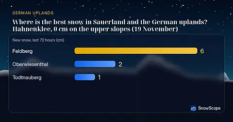
Snow in Sauerland and the German uplands on 19 November: snow depth on the upper slopes, fresh snow, the next three days and the pick for a short trip.

Fresh snow hit Italy's high ranges hard. The Aosta Valley received 215 cm in 72 hours; the Piedmont Alps got 76 cm. Data from 19 November.

Germany's one standout: Zugspitze with 14 cm. Snow cover, new snow, resorts and the days ahead in Germany on 19 November.
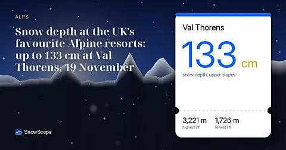
Snow at the UK's favourite Alpine resorts on 19 November: snow depth on the upper slopes, fresh snow, the next three days and the pick for a short trip.

Swiss snow depths on 19 November are well above normal. Glacier 3000 holds 60 cm, more than twice the typical depth for this date. Next week brings up to 125 cm more.

Snow-covered area jumped from 560 to 1,710 km² between November 17 and 19. Piau-Engaly holds the deepest snow at 15 cm on upper slopes as of November 19.

Only 3 of 318 snow stations in Japan had snow on the ground this morning. Here is where it is, what melted this week, and where the next snow falls.

How much snow will the mountains gain? Our table shows the resorts with the most new snow forecast for the next 24 hours and until 22 November, in …

Only 16 US Northeast resorts have skiable snow on 18 Nov. Thin cover and rain-crust risk mean careful gear choices. Forecasts for 19-21 Nov show no new snow.

Only 16 US Northeast resorts have snow on 18 November. Tuckerman Ravine leads with 38 cm (15 in) on upper slopes. Early-season cover is fragile; stick to groomed runs.
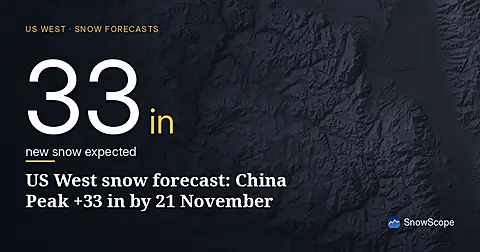
US West snow report, 18 November. Forecast to 21 November: 33 in (83 cm) at China Peak, 30 in (77 cm) at Mammoth Mountain and 28 in (70 cm) at June …

Mount Washington Alpine Resort snow report: 104 cm up top (Western Canada, 18 November). At 1,456 m on Whistler Blackcomb the season is late: our …

Where should you go skiing in the US West? If we were going this weekend, we would choose Palisades Tahoe Alpine Meadows, Kingvale and Boreal, based …

Freezing level reaches 1,500 m at Banff Sunshine Village on November 19. Fresh snow fell across Western Canada in the last 72 hours, but rain threatens the new powder.

Crested Butte snow report: 38 in up top (US West, 18 November). This is a good start at Telluride. At 10,620 ft (3,237 m), our model has 22 in …

Western Canada forecast: 90 cm new snow at Mount Washington in the next two weeks, with 70 cm expected in late November and early December. Model run 2026-11-18.

Fresh snow across the US West has built depths well above normal. At Palisades Tahoe Alpine Meadows, upper slopes hold 75 cm (measured 2026-11-18), compared to 10 cm typical for mid-November.

German mountains face significant snow arrival over seven days, with up to 29 cm possible. Data from 18 November.

Romania's mountains will see up to 25 cm of new snow in the next 7 days, with 12 cm expected on 23 November. Snow depth and forecast as of 18 November.

Fresh snow fell unevenly across the UK hills in the past 72 hours. The Southern Uplands received the most, while cover above 1000 m is now complete. Data from 18 November.

A sudden thaw on 18 November removed most of Ukraine's snow cover in 24 hours. Only 430 km² remained, down from 2,350 km² yesterday. New snow is forecast.

Mild weather erased nearly 490 km² of snow cover across Slovakia on 18 November. The High Tatras still hold 17 cm of new snow from the past 72 hours.

27 of Finland's 67 resorts have snow on 18 November. Upper slopes above 1000 m hold 41 cm on average across the country.

Zermatt has 47 cm on upper slopes today, 690% above the November median. The 0°C level stays above 2200 m through Friday.

Sweden or Finland? Where the snow is better on 18 November. Snow cover, new snow, resorts and the days ahead in Sweden on 18 November.

Over the next days the 0 °C level in the Pyrenees should move between 1,900 m and 3,670 m, according to our forecast. At the warmest time of day the …

Austria's glacier resorts lead the country after 14 cm fell in the last 72 hours. Snow cover grew to 18,140 km² as of 18 November.

The Pyrenees will see up to 63 cm of new snow in the next 14 days, with 70% falling in week one. Best snow expected above 2000 m.

Norway vs Finland: 89 % white against 55 %. Snow cover, new snow, resorts and the days ahead in Norway on 18 November.

Snow in Switzerland on 18 November: snow depth on the upper slopes, fresh snow, the next three days and the pick for a short trip.

Fresh snow fell across France's high mountains in the past 72 hours. The Mont Blanc massif received the most: 180 cm. Data from 2026-11-18.

Snow in Austria on 18 November: snow depth on the upper slopes, fresh snow, the next three days and the pick for a short trip.

26 of 114 resorts in Poland have snow on top: the list. Snow cover, new snow, resorts and the days ahead in Poland on 18 November.

Swiss ski areas are running 142% of normal snow cover for November 18. Glacier 3000 tops the ranking with 52 cm, ahead of major storms forecast.

New snow forecast for the Alps through early December. Saint François Longchamp leads with 228 cm expected over 14 days, starting with 35 cm on Thursday.

Italy faces a major snow event: up to 95 cm is forecast for the next 7 days, with 34 cm expected on Friday 20 November. Data from 18 November.

Alps snow report, 18 November. We weighed the snow already on the ground, the new snow of the last 72 hours and what the forecast adds, and picked …

No new snow forecast for Jbel Hebri or Oukaïmeden in the next 14 days. The Atlas mountains remain snowless as November progresses.

Glacier 3000 snow forecast compared with the region: 96 cm by 21 November. The snow cover shrank from 63,230 km² on 16 November to 60,480 km² today, …
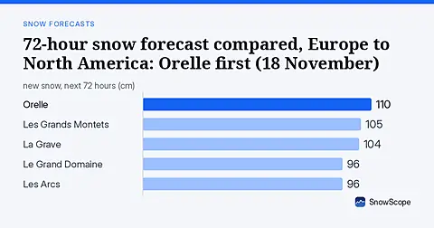
The daily ranking: most new snow forecast for the next 24 hours and until 21 November, in Europe, Morocco and North America, snow line included. …

Snow in Bavaria and the Black Forest on 17 November: snow depth on the upper slopes, fresh snow, the next three days and the pick for a short trip.

Snow in Austria on 17 November: snow depth on the upper slopes, fresh snow, the next three days and the pick for a short trip.

Montenegro snow today, 17 November: snow cover, new snow, snow depth by height, the next days and the best resorts.

Serbia snow today, 17 November: snow cover, new snow, snow depth by height, the next days and the best resorts.

Croatia snow today, 17 November: snow cover, new snow, snow depth by height, the next days and the best resorts.

Bosnia and Herzegovina snow today, 17 November: snow cover, new snow, snow depth by height, the next days and the best resorts.

Albania snow today, 17 November: snow cover, new snow, snow depth by height, the next days and the best resorts.
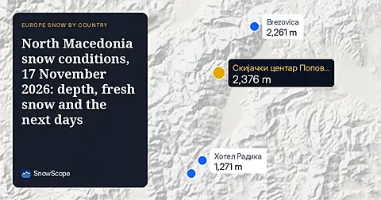
North Macedonia snow today, 17 November: snow cover, new snow, snow depth by height, the next days and the best resorts.

Les Grands Montets saw 74 cm of new snow in the last 72 hours, with more forecast for the coming days, according to our model on November 17, 2026.
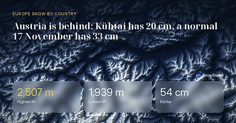
Austria is behind: Kühtai has 20 cm, a normal 17 November has 33 cm. Snow cover, new snow, resorts and the days ahead in Austria on 17 November.
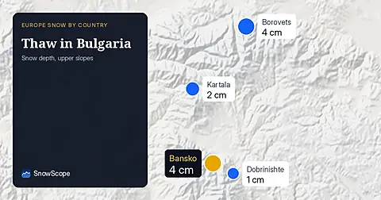
Thaw in Bulgaria: 330 km² of snow cover gone in a day. Snow cover, new snow, resorts and the days ahead in Bulgaria on 17 November.

Finland or Sweden? Where the snow is better on 17 November. Snow cover, new snow, resorts and the days ahead in Finland on 17 November.

Snow is coming in France: up to 87 cm in the week ahead. Snow cover, new snow, resorts and the days ahead in France on 17 November.
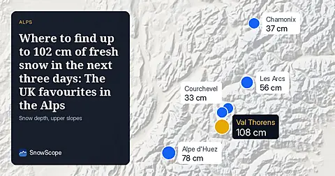
Snow at the UK's favourite Alpine resorts on 17 November: snow depth on the upper slopes, fresh snow, the next three days and the pick for a short trip.

Rapid snow loss across Italy on 17 November as temperatures rise. Only 12,540 km² remains covered, down from 21,210 km² yesterday. The Aosta Valley saw 134 cm of new snow in 72 hours.

Norway's snow cover is growing fast. Up to 39 cm of new snow is forecast over the next seven days, with the heaviest fall on November 20.

Poland's snow-covered area shrank from 1,300 to 710 km² in a week. Karpacz holds the deepest snow at 36 cm as of 17 November.

Mild day in Romania: the snow retreats to 1,700 m. Snow cover, new snow, resorts and the days ahead in Romania on 17 November.

Slovakia's snow cover dropped to 1,830 km2 today. Snow sits mostly above 1,200 m; the High Tatras and Low Tatras lead with 8 cm of new snow in 72 hours.

79% of Sweden's ski areas show snow today. Upper slopes at Björkliden and Abisko carry 131 cm. The Hemavan fjells led the past 72 hours with 15 cm of fresh snow.

Fresh snow fell unevenly across Swiss mountains. The Valais Alps received 92 cm in three days; the Bernese Oberland 54 cm. Data from 17 November.

UK gained 8,380 km² of snow cover by 17 November. The North Pennines led with 27 cm in 72 hours.

Ukraine's snow cover dropped to 6% today as the Carpathians melt back. Poland holds twice the white share. Both countries face fresh snow by Friday.

Two-week snow outlook in Andorra: 13 cm and 21 cm. Snow cover, new snow, resorts and the days ahead in Andorra on 17 November.

Only 22 of 170 Czech ski areas show snow cover on 17 November. The Jeseníky and Krkonoše lead with 9 cm and 8 cm in 72 hours. More snow arrives from 20 November.

Slovenia has only 6 % white cover today against Austria's 34 %. Fresh snow in the Julian Alps offers the best chance for early season runs. Data from 17 November.

The snow is shrinking in Germany: 840 km² gone since last week. Snow cover, new snow, resorts and the days ahead in Germany on 17 November.

Kosovo snow today, 17 November: snow cover, new snow, snow depth by height, the next days and the best resorts.

Orelle holds 42 cm, close to the typical 53 cm for mid-November. Fresh snow forecast across the Alps over the next three days.

96 cm of new snow forecast for Les Arcs over the next three days, with today bringing the heaviest falls; model run November 16.

The two-week picture in the US West, 17 November to 30 November, drawn from the two global models that reach two weeks, ECMWF and GFS. Middle of the …

Whistler Blackcomb saw 76 cm of new snow in the last 72 hours, with Mount Cain Alpine Park also receiving 64 cm, as of November 16, 2026.
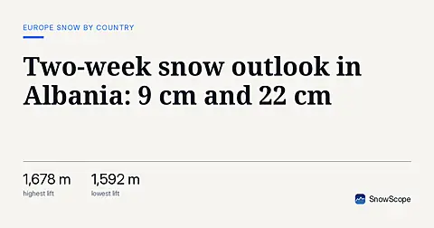
Albania forecasts 9 cm of snow rising to 22 cm over two weeks, based on our model from November 16.
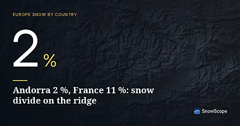
On 16 November, Andorra has snow cover on just 2 % of its area while France climbs to 11 %; the gap reflects autumn patterns, with deeper falls forecast next week.

215 of 277 Austrian ski resorts have early-season snow on 16 November. The snow line sits at 1500 metres; expect 50 cm in the next week.

Thaw in Bosnia and Herzegovina: 600 km² of snow cover gone in a day

Bulgaria covers just 2% in white with 5 cm at Borovets on its first snow day, while Romania shows 10%, measured 2026-11-16

Mild conditions erased 950 km2 of snow across Croatia on 16 November. Only 880 km2 remains, mostly above 1,500 m. Next snow arrives 21 November.

Thaw has shrunk Czechia's snow cover from 1,250 km² to 720 km² in one day. Measured 16 November. Fresh snow arrives 17 November.

Finland gained 138,530 km² of snow cover in a week, reaching 157,360 km² as the season opened. Data from 16 November 2026.

France or Switzerland? Where the snow is better on 16 November. Snow cover, new snow, resorts and the days ahead in France on 16 November.

German Alps show just 43% of normal snow depth across tracked resorts on 16 November, well behind schedule as the season opens.

Greece snow today, 16 November: snow cover, new snow, snow depth by height, the next days and the best resorts.

Hungary snow today, 16 November: snow cover, new snow, snow depth by height, the next days and the best resorts.

Ireland snow today, 16 November: snow cover, new snow, snow depth by height, the next days and the best resorts.

Monterosa Ski holds 99 cm, 38% above normal for mid-November, as Italian Alps gain early snow on 16 November.
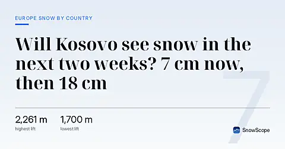
Kosovo's two-week snow outlook: 7 cm by November 23 and up to 18 cm from November 24-30, based on satellite data as of November 16.

Our model shows 11 cm in the next week and 22 cm Nov 24-30. Data from 16 Nov.

North Macedonia's mountains will see modest snow this week, then heavier falls next week. Data from 16 November.
Fresh snow from a three-day storm peaked at 76 cm in Jotunheimen and 74 cm in Hardangervidda, Norway's high ranges, on 16 November.

Rapid thaw removed nearly 44% of Poland's snow cover on 16 November. Only 1,170 km² remains white, with recovery expected from 17 November.

Portugal snow today, 16 November: snow cover, new snow, snow depth by height, the next days and the best resorts.

Snow coverage in Romania dropped from 12,900 km² to 6,630 km² in a week, but peaks above 1,500 m keep their white cover as of 16 November.

Despite 60 cm of fresh snow in 72 hours, Scandinavia's mid-November depths are well below average as of 16 November.

Riksgränsen dominates Scandinavia with 173 cm of snow depth measured on 16 November, holding far more mountain water than any rival resort in the region.

Three of Serbia's nine resorts hold measurable snow on 16 November. Avantura park tops the ranking with 28 cm depth at its station.

Slovakia's snow-covered area rose sharply to 2,020 km² in one week. Ski centrum Dedinky leads with 48 cm. Data from 16 November.

Early November snow covers 1,130 km2 of Slovenia. The ground turns white above 2,000 m elevation; below that, most slopes stay brown. Data from 16 November 2026.

Spain's snow-covered area fell to 310 km² on 16 November. Only 6 of 31 resorts have skiable snow, led by Aramón Cerler at 17 cm.

Sweden's snow cover grew by 167,100 km² in one week. Abisko holds 129 cm as early-season water accumulates in high fells. Data from 16 November.

Snow model forecasts 112 cm in Switzerland by November 24, with 29 cm on November 17. Fresh water accumulates across the high Alps over the coming week.

Warm weather on 16 November removed 1290 km2 of UK snow cover. The snow line is now at 800 metres; fresh snow arrives tomorrow.
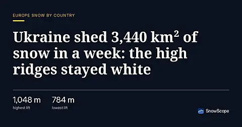
Ukraine's snow cover fell from 5,090 km² to 1,650 km² in a week. As of November 16, high terrain above 1,500 m held 89% cover. Up to 25 cm snow forecast in the next 7 days.

Sestriere snow forecast for 23–29 November 2026: 30 cm at the top (15–44 cm), 25 cm at the base, snowiest day Wednesday 25 November, with neighbours compared.

Madonna di Campiglio snow forecast for 23–29 November 2026: 27 cm at the top (8–46 cm), 23 cm at the base, snowiest day Wednesday 25 November, with neighbours compared.

Val Gardena snow forecast for 23–29 November 2026: 11 cm at the top (5–18 cm), 6 cm at the base, snowiest day Wednesday 25 November, with neighbours compared.

Next week's fresh snow in Cortina d'Ampezzo: 5–21 cm on the upper slopes and 0–1 cm at the base (23–29 November 2026), best day, best slopes and how sure the forecast is.

Livigno snow forecast for 23–29 November 2026: 19 cm at the top (6–31 cm), 16 cm at the base, snowiest day Wednesday 25 November, with neighbours compared.

Next week's fresh snow in Courmayeur: 8–44 cm on the upper slopes and 5–28 cm at the base (23–29 November 2026), best day, best slopes and how sure the forecast is.

Cervinia snow forecast for 23–29 November 2026: 23 cm at the top (6–41 cm), 19 cm at the base, snowiest day Thursday 26 November, with neighbours compared.

Saalbach snow forecast for 23–29 November 2026: 17 cm at the top (3–31 cm), 8 cm at the base, snowiest day Sunday 29 November, with neighbours compared.

Stubai Glacier snow forecast for 23–29 November 2026: 14 cm at the top (2–25 cm), 12 cm at the base, snowiest day Thursday 26 November, with neighbours compared.

Hintertux snow forecast for 23–29 November 2026: 14 cm at the top (3–24 cm), 12 cm at the base, snowiest day Wednesday 25 November, with neighbours compared.

Mayrhofen snow forecast for 23–29 November 2026: 17 cm at the top (2–31 cm), 1 cm at the base, snowiest day Sunday 29 November, with neighbours compared.

Next week's fresh snow in Kitzbühel: 3–34 cm on the upper slopes and 2–14 cm at the base (23–29 November 2026), best day, best slopes and how sure the forecast is.

Next week's fresh snow in Obergurgl: 3–23 cm on the upper slopes and 2–20 cm at the base (23–29 November 2026), best day, best slopes and how sure the forecast is.

Sölden snow forecast for 23–29 November 2026: 13 cm at the top (2–24 cm), 8 cm at the base, snowiest day Thursday 26 November, with neighbours compared.

Next week's fresh snow in Lech-Zürs: 7–53 cm on the upper slopes and 6–48 cm at the base (23–29 November 2026), best day, best slopes and how sure the forecast is.

Ischgl snow forecast for 23–29 November 2026: 18 cm at the top (3–34 cm), 14 cm at the base, snowiest day Thursday 26 November, with neighbours compared.
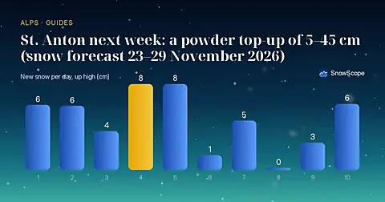
St. Anton snow forecast for 23–29 November 2026: 25 cm at the top (5–45 cm), 18 cm at the base, snowiest day Sunday 29 November, with neighbours compared.

Next week's fresh snow in Andermatt: 3–38 cm on the upper slopes and 3–28 cm at the base (23–29 November 2026), best day, best slopes and how sure the forecast is.

Next week's fresh snow in Saas-Fee: 6–37 cm on the upper slopes and 5–30 cm at the base (23–29 November 2026), best day, best slopes and how sure the forecast is.

Engelberg snow forecast for 23–29 November 2026: 22 cm at the top (2–42 cm), 7 cm at the base, snowiest day Thursday 26 November, with neighbours compared.

Next week's fresh snow in Laax: 4–38 cm on the upper slopes and 1–10 cm at the base (23–29 November 2026), best day, best slopes and how sure the forecast is.
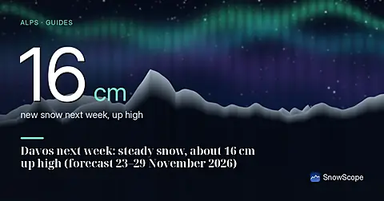
Next week's fresh snow in Davos: 4–27 cm on the upper slopes and 2–8 cm at the base (23–29 November 2026), best day, best slopes and how sure the forecast is.

St. Moritz snow forecast for 23–29 November 2026: 19 cm at the top (5–33 cm), 16 cm at the base, snowiest day Wednesday 25 November, with neighbours compared.

Verbier snow forecast for 23–29 November 2026: 24 cm at the top (5–42 cm), 9 cm at the base, snowiest day Thursday 26 November, with neighbours compared.

Next week's fresh snow in Zermatt: 7–39 cm on the upper slopes and 4–27 cm at the base (23–29 November 2026), best day, best slopes and how sure the forecast is.
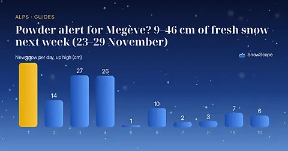
Next week's fresh snow in Megève: 9–46 cm on the upper slopes and 1–2 cm at the base (23–29 November 2026), best day, best slopes and how sure the forecast is.

Next week's fresh snow in Flaine: 9–46 cm on the upper slopes and 8–45 cm at the base (23–29 November 2026), best day, best slopes and how sure the forecast is.

Avoriaz snow forecast for 23–29 November 2026: 29 cm at the top (9–48 cm), 17 cm at the base, snowiest day Wednesday 25 November, with neighbours compared.
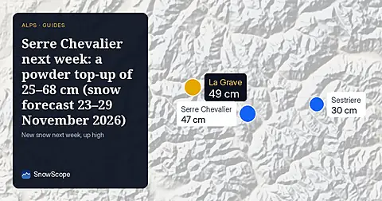
Next week's fresh snow in Serre Chevalier: 25–68 cm on the upper slopes and 8–28 cm at the base (23–29 November 2026), best day, best slopes and how sure the forecast is.

Next week's fresh snow in La Grave: 23–74 cm on the upper slopes and 7–39 cm at the base (23–29 November 2026), best day, best slopes and how sure the forecast is.

Next week's fresh snow in Les 2 Alpes: 20–73 cm on the upper slopes and 4–22 cm at the base (23–29 November 2026), best day, best slopes and how sure the forecast is.
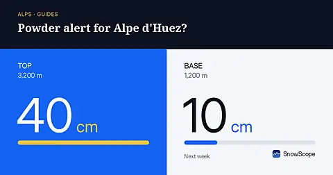
Alpe d'Huez snow forecast for 23–29 November 2026: 40 cm at the top (18–62 cm), 10 cm at the base, snowiest day Wednesday 25 November, with neighbours compared.

La Plagne snow forecast for 23–29 November 2026: 28 cm at the top (11–45 cm), 17 cm at the base, snowiest day Thursday 26 November, with neighbours compared.

Les Arcs snow forecast for 23–29 November 2026: 29 cm at the top (11–48 cm), 12 cm at the base, snowiest day Thursday 26 November, with neighbours compared.

Méribel snow forecast for 23–29 November 2026: 28 cm at the top (13–44 cm), 19 cm at the base, snowiest day Wednesday 25 November, with neighbours compared.

Next week's fresh snow in Courchevel: 12–42 cm on the upper slopes and 4–30 cm at the base (23–29 November 2026), best day, best slopes and how sure the forecast is.

Next week's fresh snow in Val Thorens: 13–46 cm on the upper slopes and 11–39 cm at the base (23–29 November 2026), best day, best slopes and how sure the forecast is.

Next week's fresh snow in Tignes: 11–48 cm on the upper slopes and 8–38 cm at the base (23–29 November 2026), best day, best slopes and how sure the forecast is.

Val d'Isère snow forecast for 23–29 November 2026: 28 cm at the top (10–46 cm), 24 cm at the base, snowiest day Thursday 26 November, with neighbours compared.

Chamonix snow forecast for 23–29 November 2026: 27 cm at the top (8–46 cm), 14 cm at the base, snowiest day Wednesday 25 November, with neighbours compared.

Orelle reached 31 cm by 16 November, up 17 cm in one week. The Alps are forecast to get up to 103 cm more snow by 19 November.

Is there more snow than a year ago? We compared today with 15 November last winter at 4 resorts in Western Canada: 2 of them have more snow now, …

The early-winter snowpack in the Alps is building unevenly, and height makes all the difference. Today the deepest snow in the Alps is at La Grave …

Is there snow in the Atlas today? There is no snow on the Atlas ski slopes today. Snow is stored only on the highest summits: about 20 km² of ground, …

The snow has pulled back since 13 November, from 6,880 sq mi (17,820 km²) to 6,039 sq mi (15,640 km²) today; for 18 November our forecast gives …

2 of 4: that is how many resorts in the US Northeast are clearly above normal today. How does this winter look so far? We set today's snow at 4 …

Snow-covered area: 258,160 km² on 13 November, 253,880 km² today, 298,900 km² forecast for 18 November. The map is getting less white. Three inputs, …

Pyrenees snow report, 15 November. Mixed rain and snow: snow is expected only up high, about 7–19 cm near the top of Cauterets Cirque du Lys …

At Big White on 15 November, the upper slopes hold 68 cm near the summit while the base remains bare; an extreme vertical gradient typical of early season.

79 cm new snow forecast for Les Grands Montets from 16–18 November, mostly above 2000 m elevation, based on forecast from 15 November.

At Andermatt (2963 m) the forecast gives 75 mm of precipitation from 15 November to 20 November. During the wet hours the 0 °C level stands near 2160

Rain forecast as freezing level climbs to 4080 m; snow measured on 15 November is thin (under 20 cm) at all major Pyrenees resorts.

Picking a resort in the US Northeast comes down to three things: how deep the snow is, how fresh it is, and what is still to come. We weighed the …

Les Deux Alpes: how much fresh snow fell? 38 cm in 72 hours (15 November). Where did the most fresh snow fall in the Alps? La Grave got 41 cm of new …

Manning Park Resort has 22 percent of normal snow on 2026-11-15, with best historical snow arriving in weeks 12-14, still months away.

Courmayeur leads forecast with 88 cm in 72 hours; snow depth is at 142 percent of normal for mid-November as of November 15 data.

Beaver Mountain charges one $75 adult day price for 2026-27. Our snow history says early December is a coin flip there; the week before Christmas is far safer.

Bridger Bowl's 2026/27 adult ticket is $86 online, $99 at the window. Our history says mid-December is a coin flip at mid-mountain; late December is safer.

Himos snow in mid-November 2026: the weather stations around Jämsä measured 0 to 2 cm on 13 November; the first-snow cross-country loop opens on 14 November, the slope opening date is not set yet. Rain risk this week and 46 past winters.

Indy Base Pass $419, Indy+ $469, two days at each member area. We set it against checked December day prices at seven Indy areas, and their snow odds.

Lofsdalen snow report for mid-November 2026: the Häggberget station at 682 m measured 6 cm on 12 November, valley stations 7 to 8 cm on 13 November; about 7 cm more forecast with no rain, opening 11 December, 46 past winters.

Lookout Pass adult tickets for 2026-2027 are $63 midweek with a reservation, $75 on weekends. Mid-mountain had 20 in (50 cm) by 15 December in 85 % of past winters.

Montana Snowbowl's 2026/27 adult tickets are $78 on weekdays and $85 on weekends. Mid-mountain had 20 in (50 cm) by 15 December in 83 % of our past winters.

Narvikfjellet snow conditions in mid-November 2026: Norway's national snow map shows about 50 cm at 1110 m and 35 cm at 844 m but almost none by the fjord; the nearest Swedish station at Katterjåkk measured 9 cm. Week ahead and 46 past winters.

Røros dog sledding guide for winter 2026-27: about 5 to 6 cm of snow on Norway's national snow map, kennels listed by Destination Røros with prices, the Femundløpet sled-dog race in February 2027, and the rules for your own dog near tame reindeer.

Ski Cooper holds its adult weekday price at $49 for 2026-27 ($99 weekends). Mid-mountain usually has 26 in (66 cm) of snow on 15 December, 70 % of winters above 20 in.

Sunlight tickets start at $74 and its Sunny 6 Pack is $349 if bought by November 30, 2026. Mid-mountain had 20 in (50 cm) by 15 December in 72 % of winters.

Timberline full-day tickets are $129 off-peak and $161 peak; the afternoon ticket is $96 off-peak. Mid-mountain usually holds 52 in (132 cm) by 15 December.

From Ski Cooper ($49 weekdays, $99 weekends) to Mt. Baker ($98.80 vs $115.42): checked December price splits at seven US West ski areas, with their snow odds.

Romme Alpin snow in mid-November 2026: Borlänge measured 4 cm, Ludvika 10 cm and Falun 0 cm on 13 November; rain this week; the season starts 19 December on made snow. What 46 past winters say about natural snow here.

Schweitzer's 2026/2027 3-Pack is $249, $83 a day by the resort's own count. The top usually holds 54 in (138 cm) of snow by 15 December.

Krvavec December skiing: day pass EUR 47, 6 days EUR 205, yet only 13 cm at mid-mountain on a typical 15 December and 11 of 46 winters bare that day.

Ski 157 km of mapped runs in Serre Chevalier where the top of the mountain has a 100 % chance of snow by mid-December.

Beitostølen snow conditions in mid-November 2026: about 10 to 13 cm across the whole area on Norway's national snow map, 10 cm more forecast this week with no rain, and how 46 past winters usually look at this high village.

Vuokatti snow conditions in mid-November 2026: the stations at Sotkamo measured 0 cm on 13 November, Kajaani 1 cm; about 9 cm is forecast this week but some of it as rain; slopes aim to open 4 December. 46 past winters.

Turracher Höhe in December: 23 cm mid-mountain on a typical 15 December, 39 % of winters with 30 cm before Christmas; 6-day low-season pass EUR 353.

Branäs snow conditions in mid-November 2026: the Kindsjön station at 425 m measured 27 cm on 13 November, Letafors 17 cm, Östmark in the valley 0 cm. Rain risk this week, opening 11 December, 46 past winters.

Hochkar December skiing: day tickets seen from EUR 32.90 to 47.90 on December dates; 38 cm mid-mountain on a typical 15 December, falling since the 1980s.

Idre Fjäll December skiing: 32 cm mid-mountain on a typical 15 December; 65 % of winters with 30 cm in mid-December, 76 % in Christmas week. Honest odds.

Norefjell snow depth in mid-November 2026: Norway's national snow map jumped from about 4-5 cm to 15-20 cm overnight, with about 45 cm on the high plateau. The week ahead, rain risk low down, and 46 past winters.

Tahko snow depth in mid-November 2026: the slope season opened on 13 November with 2 of 14 lifts, on made snow; the stations around measured 0 cm after a short 2 to 4 cm cover melted. The week ahead and 46 past winters.
Brighton from $72 vs Ski Cooper at $49 weekdays and Wolf Creek at $96: Utah and Colorado budget areas compared on 46 winters of December snow.

Ten European ski resorts ranked for December value, led by Les 2 Alpes with 75 cm of mid-mountain snow.

Brundage day tickets start as low as $65 on select days; mid-mountain had 20 in (50 cm) of snow on 15 December in 87 % of our past winters. Holiday dates to avoid.

Boí Taüll starts at 2039 m and beats Baqueira Beret on day-pass price, though early December snow still takes some patience.

Funäsdalsfjällen snow in mid-November 2026: the station at Ljusnedal measured 7 cm on 13 November, Tänndalen is open on a small area, Ramundberget opens 19 December. Week ahead and 46 past winters at both resorts.

Sälen December skiing: 28 cm on a typical 15 December and 48 % of winters with 30 cm in mid-December, down from the 1980s; Trysil next door does better.

Rovaniemi husky and dog guide for winter 2026-27: the weather stations measured 7 to 8 cm on 13 November, the city's first ski track opened, three husky farms listed by Visit Rovaniemi with dates and prices, daylight, and the rules for your own dog.
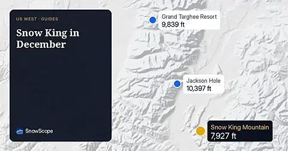
Snow King adult day tickets start at $100. On our snow history its mid-mountain had 20 in (50 cm) by 15 December in 87 % of winters: a cheap way to ski the Jackson valley.

Orcières Merlette offers a high base at 1826 m and a 6-day pass from 227 EUR, making it a reliable choice for a December ski trip.

Is Alpe d'Huez worth it for December 2026? We check the snow odds, the starting price of 58.00 EUR, and compare it with Les 2 Alpes.

Myrkdalen snow depth in mid-November 2026: Norway's national snow map shows about 14 cm on the slopes and 33 cm at 1333 m; our forecast gives about 44 cm at the top in seven days. 46 past winters for late November.

Slovenia's ski passes are the cheapest (Krvavec EUR 205 for 6 days), but natural December snow there is rare; Lachtal, the Hochkar and the Mölltal glacier do better.

Loveland sells $60 online tickets through December 13, 2026, then $159 at the window. Is early-December snow good enough? Our 46 past winters answer week by week.

Cauterets offers 25 km of runs for 46 EUR, but our snow history shows that the best chance for cover is the last week of December.

Kiruna dog sledding guide for winter 2026-27: the weather station in Kiruna measured 0 cm of snow on 13 November, operators listed by Kiruna Lapland with season and prices, short days, and the rules for your own dog on ski tracks, in reindeer land and in Abisko National Park.
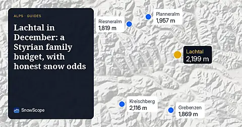
Lachtal December skiing: day pass EUR 62, children up to 6 free, 46 cm mid-mountain on a typical 15 December, but a clear downward trend.

Saariselkä snow report for mid-November 2026: the weather station in Saariselkä measured 4 cm on 13 November, steady for a week; about 22 cm is forecast in seven days with no rain; slopes aim to open 21 November.

White Pass online tickets start at $69 off-peak and $89 on peak days, and mid-mountain had 20 in (50 cm) of snow on 15 December in 87 % of past winters.

Ski the 131 km of runs in the Forêt Blanche this December with a six-day pass for 298 EUR.

Riksgränsen and Björkliden snow report for mid-November 2026: the station at Katterjåkk measured 9 cm and Abisko 2 cm on 13 November, the week ahead, why the lifts open only in February, and 46 past winters.

Ruka December skiing: 6-day pass EUR 265, day EUR 58; 36 cm on a typical 15 December, but only 39 % of winters with 30 cm in the first week.

Monterosa Ski day passes run from 40.00 to 71.00 EUR online. In December the snow is up high: 124 cm usual at 3030 m, 6 cm at 1207 m.

Hafjell snow report for mid-November 2026: about 2 cm near the top and nothing at the bottom on Norway's national snow map, 9 cm forecast at the top this week with rain below, and how 46 past winters usually look in late November.
Wolf Creek adult tickets are $96 on regular days and $110 on peak days for 2026-2027; mid-mountain had 34 in (87 cm) of snow on a typical 15 December.

Fellhorn/Kanzelwand December skiing: 63 cm at the 1965 m top on a typical 15 December, 10 cm at the bottom; Advent 6-day pass EUR 344.50 until 20 December.

On 13 November 2026 the weather stations in Stockholm and Helsinki measured 0 cm of snow while Sälen had 45 cm and Umeå 20 cm. Height, the sea, the city and the track of the storms explain it, with numbers from 46 past winters.
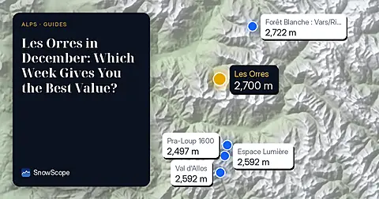
Plan your December 2026 trip to Les Orres by matching weekly pass prices with our snow history of 46 past winters.

Hemavan December skiing: 82 cm mid-mountain on a typical 15 December, every winter with 30 cm there in mid-December; the deepest December of our Nordic set.

Pyhä-Luosto snow depth in mid-November 2026: weather stations around the fells measured 0 to 9 cm on 13 November, below normal; about 23 cm is forecast this week with no rain. Opening plans and 46 past winters.

Brighton day tickets start at $72 for 2026/27 if bought early. Mid-mountain usually has 37 in (94 cm) of snow on 15 December, against 25 in (64 cm) at Park City.

Compare Grandvalira and Spanish resorts in December 2026 for snow depths, lift heights, and prices starting from 49.00 EUR.

Vemdalen snow conditions in mid-November 2026: Swedish weather stations around Vemdalsskalet and Björnrike measured 6 to 12 cm on 13 November after a snowy two days, about 8 cm more this week, opening plans and 46 past winters.

Pitztal Glacier December skiing: 87 cm mid-mountain on a typical 15 December, December snow up since the 1980s; day pass EUR 77, 6 days EUR 410.

Voss snow forecast for mid-November 2026: Norway's national snow map shows about 20 cm at 1348 m and almost nothing in town, our forecast gives about 35 cm on top of Voss Resort over seven days with rain below about 600 m, plus 46 past winters.

16 budget-friendly US ski areas ranked by December snow odds from 46 past winters, with the day prices we checked: from $49 weekdays to $125 and up.

For a low-cost December family ski week at Astún-Candanchú, aim for late December when top slopes hold good snow in 67 % of past winters.

Germany in December: the Zugspitze and the Fellhorn top had 30 cm in at least 9 of 10 winters in mid-December; Sudelfeld, Brauneck and the Feldberg rarely do.

A practical guide to dog sledding around Tromsø in winter 2026-27: which husky farms the tourist board lists, when the snow season starts, what a ride costs, the polar night, and the rules for walking your own dog on snow and near reindeer.

Puy-Saint-Vincent pairs a 44 EUR adult 1-day pass with solid December snow higher up, compared here with its big neighbour Serre Chevalier.
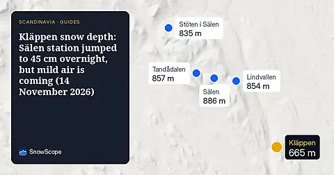
Kläppen snow depth in mid-November 2026: the weather station in Sälen, 13 km away, measured 45 cm on 13 November after 11 cm the day before; the resort reports 25 cm. Rain risk this week, opening 11 December, 46 past winters.

Every one of our 46 past winters had 20 in (50 cm) or more at Grand Targhee's mid-mountain on 15 December. Online day tickets run $125 to $180 by date.

Oppdal December skiing: 60 cm at the 585 m base on a typical 15 December, 93 % of winters with 30 cm there in mid-December, better than Trysil's base.

Grimentz-Zinal offers 71 km of runs and reliable high-altitude snow for your December trip, with 6-day passes at CHF 339.00.

Austria before Christmas: Galtür EUR 258 and Kühtai EUR 269 for 6 days with 30 cm in over 90 % of winters; glaciers cost more, small hills are a gamble.

Planning a December trip to Baqueira Beret? See our snow history, ticket prices starting at 70,00 € for a 1-day pass, and how it compares to Astún-Candanchú.

Bergen dog owners, weekend of 14 November 2026: bare ground at Florida on Friday, 5 cm only up at Kvamskogen, and a very wet Sunday. Bergen's year-round leash rules, the four fenced dog yards, and the Fløyen trails.


We rank French ski resorts by December snow odds and checked pass prices, starting from 36.00 EUR for an adult day pass in Les Karellis.

At Oukaïmeden, December gives 18 cm at mid-mountain in a typical month, against 44 cm in February and 53 cm in March. What 46 winters say about the right month to ski.


Galtür December skiing: 55 cm mid-mountain on a typical 15 December, 93 % of winters with 30 cm in mid-December; low-season day pass EUR 55.50 until 18 December.

Geilo December skiing: 57 cm mid-mountain on a typical 15 December, 96 % of winters with 30 cm in mid-December; day passes from NOK 590 (about EUR 56).

Göteborg dog owners, weekend of 14 November 2026: 0 cm of snow measured around the city on Friday, a mild, mostly dry weekend. Where the leash rules are relaxed in November, the 12 fenced dog yards and Delsjöområdet.


Grandvalira is often sold as cheap December skiing, yet natural snow at the base averages just 9 cm in past winters.

Helsinki for dog owners this weekend: 0 cm of snow measured at all five city stations on Friday. The Östersundom dog forest, nearly a hundred dog parks, the rules on ski tracks, and a grey, mild weekend.

Hemsedal December skiing: 70 cm mid-mountain and 106 cm at the top on a typical 15 December, but 32 cm at the base; Geilo nearby from NOK 590 a day.

Hintertux Glacier December skiing: 98 cm at 3245 m and 52 cm mid-mountain on a typical 15 December; day pass EUR 82, 6 days EUR 399, small children free.

Compare December snow odds and checked lift pass prices starting at 40.00 EUR across Italian ski areas for your weekend drive.
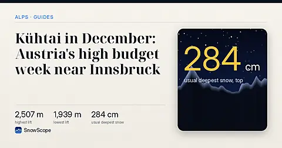
Kühtai December skiing: 60 cm at the 1939 m base on a typical 15 December, and a low-season 6-day pass of EUR 269 until 18 December.

Les 2 Alpes reaches 3511 m for high snow in December 2026, with an adult 6-day pass priced at 266.50 EUR.

Les Karellis offers 45 km of runs and a 6-day adult pass for 191.00 EUR with a 98 % chance of snow mid-mountain in late December.
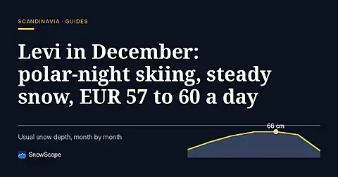
Levi December skiing: 38 cm on a typical 15 December, 91 % of winters with 30 cm in Christmas week, and December snow up, not down; day pass EUR 60, EUR 57 online.

Ski Livigno for 51.50 EUR per day before December 18 when the snow at the top reaches 30cm in 100 % of past winters.


Montgenèvre has 56 cm of usual December snow at its base, giving weekend drivers deeper early cover than Sestriere across the border.

Obertauern December skiing: 43 cm on a typical 15 December at mid-mountain, and a 6-day pass of EUR 331 before Christmas. Snow history and prices.


Oukaïmeden in mid-December: 16 cm at mid-mountain in a typical winter, 50 cm or more in only 11 % of winters. Date by date, what 46 winters say.

Oukaïmeden is 50 km as the crow flies from Marrakech. How to pull off a December ski weekend: when to go, what the snow odds are, what we know about prices.
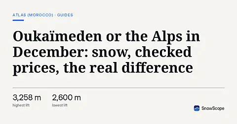
Les 3 Vallées: €75.70 a day from 5 to 18 December 2026. Oukaïmeden: no official online tariff, 16 cm at mid-mountain in mid-December. The honest comparison.


Saas-Fee lifts reach 3556 m where our snow history shows 100 % of past winters have at least 30 cm of snow by mid-December.

12 Nordic resorts in December: Hemavan, Hemsedal and Geilo had 30 cm at mid-mountain in mid-December in 96-100 % of winters; Finnish day passes EUR 58-60.

December snow odds from 46 winters and checked day prices: Ski Cooper $49, Les 3 Vallées €75.70, Oukaïmeden no official tariff. Where a cheap December ski day works.

Discover the calm slopes of St-Luc Chandolin where mid-mountain snow has reached 30 cm in 98 % of winters during late December.


Tampere on 13 November 2026: 0 cm at Tottijärvi and at the stations around the city, 2 cm at Hyytiälä to the north-east. In half of past winters Tampere was white by 10 November. A trace of wet snow on Saturday.

Measured snow in Tromsø on 13 November 2026: 6 cm at the town station on the island, 44 cm at 710 m in Lyngen, 3 cm at Bardufoss. Near normal for the date, and a very cold weekend ahead.


Trysil December skiing: 44 cm mid-mountain on a typical 15 December, 83 % of winters with 30 cm in mid-December; prices are dynamic, so book early.

Valloire-Valmeinier offers 131 km of runs and a 98 % chance of 30 cm of snow at mid-mountain by mid-December.


Zugspitze December skiing: 122 cm at 2627 m on a typical 15 December, adult day ticket EUR 70.50 online; Garmisch-Classic below it EUR 69 with far less snow.

Ylläs snow conditions in mid-November 2026: the weather stations around Ylläs measured 0 to 2 cm on 13 November, far below normal; about 23 cm of snow is forecast this week with no rain, and the slopes aim to open on 21 November.

Mölltaler Gletscher December skiing: 66 cm at the 2103 m bottom lift and 128 cm mid-mountain on a typical 15 December; low-season 6-day pass EUR 332.

Kvitfjell snow conditions in mid-November 2026: about 5 cm on the upper slopes and 3 cm at the bottom on Norway's national snow map, roughly 10 cm forecast up high this week, and what 46 past winters say about late November and December.

Mt. Baker in December: 46 in (116 cm) of snow at mid-mountain on a typical 15 December, and a $98.80 Monday-to-Thursday ticket sold on the day only.

Can a cautious first-timer trust Courmayeur in December when mid-mountain averages 60 cm of snow across our past winters?

The white area on the map went from 910 km² (12 November) to 1,100 km² today, and the forecast says 640 km² on 17 November. Mixed rain and snow: snow …

Alps snow report, 14 November. If you want the most snow in the Alps today, look at Saint-Luc (Switzerland): about 110 cm up high. After it come …

Åre December skiing: 40 cm mid-mountain on a typical 15 December, 89 % of winters with 30 cm in mid-December, but a sharp fall at the top since the 1980s.

Read the snow in the Pyrenees today and you get fresh powder, thin early-season snow and warm air that can leave a crust. So here is the kit list, …

Les Deux Alpes: 38–42 cm of fresh snow in 72 hours (Alps, 14 November). La Grave got 53 cm of new snow in the last 72 hours, 7 cm of it in the last …

La Grave's snowpack grew 17 cm in a week to 43 cm on 14 November, now forecast to gain 61 cm over the next 72 hours as a system moves across the Alps.